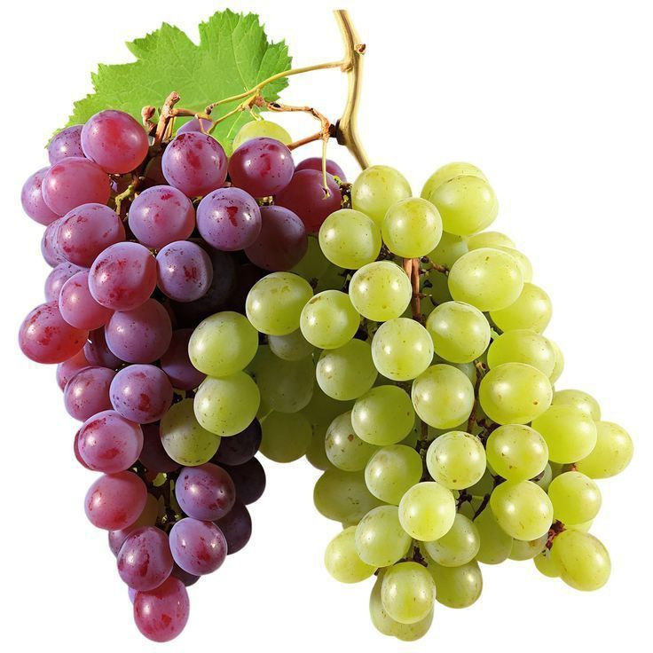

Grapes

| Index |
|---|
| Short description |
| Nutritional value |
| Health benefits |
| Best time to eat |
| Who shoud avoid |
| Fun fact |
Short Description
Grapes are small, round fruits that grow in clusters on vines. They come in green, red, and black varieties and are eaten fresh or dried as raisins. Grapes are also used to make juice and wine.
Nutritional Value
| Nutrient | Amount |
|---|---|
| Calories | 69 kcal |
| Carbohydrates | 18 g |
| Dietary Fiber | 0.9 g |
| Vitamin C | 4% |
| Potassium | 191 mg |
| Antioxidants | High |
Health Benefits
- Improves heart health
- Protects cells from damage
- Boosts immunity
- Boosts immunity
- Supports skin health
Best Time to Eat
Grapes are best eaten in the morning or early afternoon.They provide hydration and energy due to high water content.
Avoid eating grapes:
- Late at night
- In excess quantities
Best practice: Fresh grapes + well washed.
Who Should Avoid
- Diabetic patients, due to sugar content
- People with stomach sensitivity, as grapes may cause gas
- Those with kidney issues, if eaten excessively
Fun Fact
- Grapes have been cultivated for over 8,000 years
- It takes about 100 grapes to make one glass of wine
- Raisins are simply dried grapes